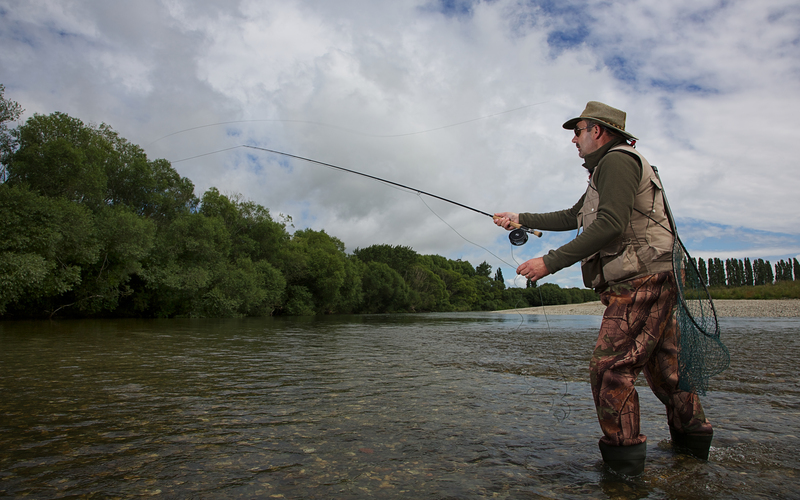

The Gore Trout statue is a testament to Gores fishing culture.
It shows how much Gore's citizens love for their fishing.
This is also shown in the Welcome sign as it is right by the
Trout statue. There are also many popular fishing spots as
Gore has a large lake running through it meaning that if you
go to the bridges its a great spot to fish.
